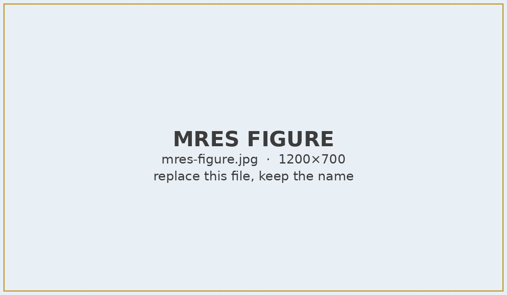

Profile
About my research
TODO: a short paragraph about you as a researcher.
Research goals
- TODO: goal 1, e.g. understand what mature heart muscle cells need to stay mature
- TODO: goal 2, e.g. understand fully how a sarcomere is formed and organised
Interests
General scientific interests
- Cytoskeleton organisation
- Saromere formation
- Human cardiac disease modelling
- Cardiac morphogenesis
I also build physics simulations — see the XY and Ising models on my programming page.
Current
MRes Bioengineering
2025 – 2026Imperial College London
- Thesis
- Investigating Zebrafish Heart Sarcomeric Organisation During Cardiac Looping
- Supervisors
- Prof. Chiu Fan Lee and Prof. Julien Vermot
- Methods
- TODO: e.g. stochastic simulation, image analysis, confocal imaging
TODO: a short description of the project in plain words — the question, what you did, what you found.

Undergraduate
BEng Biochemical Engineering
2022 – 2025University College London (UCL)
Design project: Production of Plant-Based Antibodies for Rheumatoid arthritis from Tobacco
This was a design, production, and research project focused on producing medical-grade monoclonal antibodies (mAbs) for Rheumatoid Arthritis. I focused on the chromatography process including mass balance, feed rates, and mechanical design. I also contributed to the equipment SOPs, HAZOPs, facility safety, production cost calculations, market benchmarking, and downstream production optimisation.
More
Other relevant projects
Click a project to open its notes. Copy a whole <details> block to add another.
Production of Plant-Based Antibodies for Rheumatoid Arthritis from Tobacco · 2025
TODO: notes — aim, your role, methods, outcome.
How to Change the World: Sustainable Water and Sanitation · 2024
TODO: notes.
Plasmid DNA Production Under Varied E. Coli Fermentation Conditions · 2023
TODO: notes.